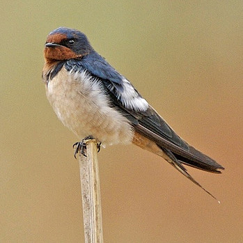

1. Herring Gull

Strikes reported: 532
Conservation status: Not rated
Info about the bird. The bird is really cool and crazy and there is a lot of stuff you should know about this bird. This bird sometimes gets hit by planes also.
2. American Kestrel

Strikes reported: 386
Conservation status: Least concern
Info about the bird. The bird is really cool and crazy and there is a lot of stuff you should know about this bird. This bird sometimes gets hit by planes also.
3. European Starling

Strikes reported: 299
Conservation status: Least concern
Info about the bird. The bird is really cool and crazy and there is a lot of stuff you should know about this bird. This bird sometimes gets hit by planes also.
4. Barn Swallow

Strikes reported: 281
Conservation status: Least concern
Info about the bird. The bird is really cool and crazy and there is a lot of stuff you should know about this bird. This bird sometimes gets hit by planes also.
5. Laughing Gull

Strikes reported: 216
Conservation status: Least Concern
Info about the bird. The bird is really cool and crazy and there is a lot of stuff you should know about this bird. This bird sometimes gets hit by planes also.
6. Rock Pigeon

Strikes reported: 212
Conservation status: Least Concern
Info about the bird. The bird is really cool and crazy and there is a lot of stuff you should know about this bird. This bird sometimes gets hit by planes also.
7. Mourning Dove

Strikes reported: 209
Conservation status: Least Concern
Info about the bird. The bird is really cool and crazy and there is a lot of stuff you should know about this bird. This bird sometimes gets hit by planes also.
8. Killdeer

Strikes reported: 154
Conservation status: Least concern
Info about the bird. The bird is really cool and crazy and there is a lot of stuff you should know about this bird. This bird sometimes gets hit by planes also.
9. Ring-billed Gull

Strikes reported: 145
Conservation status: Least concern
Info about the bird. The bird is really cool and crazy and there is a lot of stuff you should know about this bird. This bird sometimes gets hit by planes also.
10. Mallard

Strikes reported: 141
Conservation status: Least concern
Info about the bird. The bird is really cool and crazy and there is a lot of stuff you should know about this bird. This bird sometimes gets hit by planes also.
11. Barn Owl

Strikes reported: 128
Conservation status: Least Concern
Info about the bird. The bird is really cool and crazy and there is a lot of stuff you should know about this bird. This bird sometimes gets hit by planes also.
12. Eastern Meadowlark

Strikes reported: 127
Conservation status: Least concern
Info about the bird. The bird is really cool and crazy and there is a lot of stuff you should know about this bird. This bird sometimes gets hit by planes also.
13. Canada Goose

Strikes reported: 123
Conservation status: Least concern
Info about the bird. The bird is really cool and crazy and there is a lot of stuff you should know about this bird. This bird sometimes gets hit by planes also.
{kind=link}